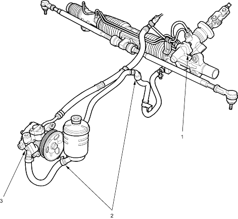

|
- GEARBOX and VALVE BODY UNIT
Check for leaks at the mating surface and flare nut connections.
- HOSES and LINES
Inspect hoses for damage, leaks, interference and twisting.
Inspect fluid lines for damage, rusting and leakage.
Check for leaks at hose and line joints and connections.
- PUMP ASSEMBLY
Check for leaks at the pump seal, inlet and outlet fittings.
|